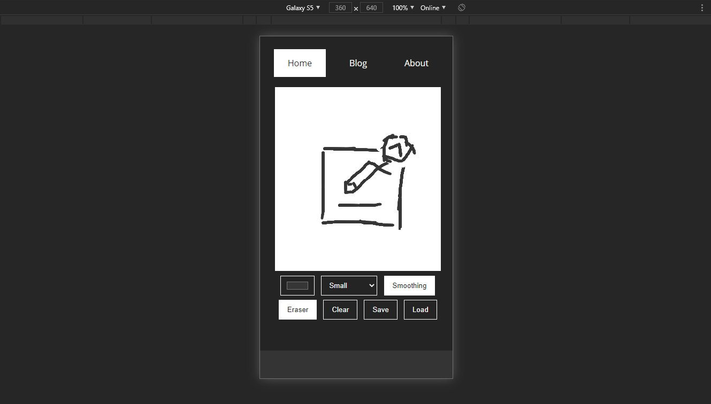
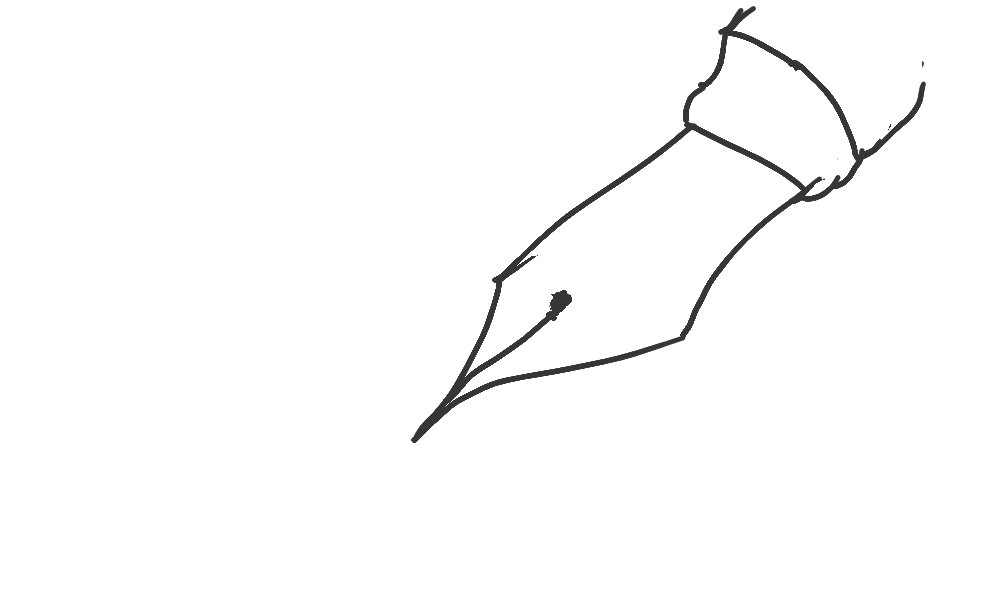
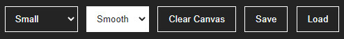
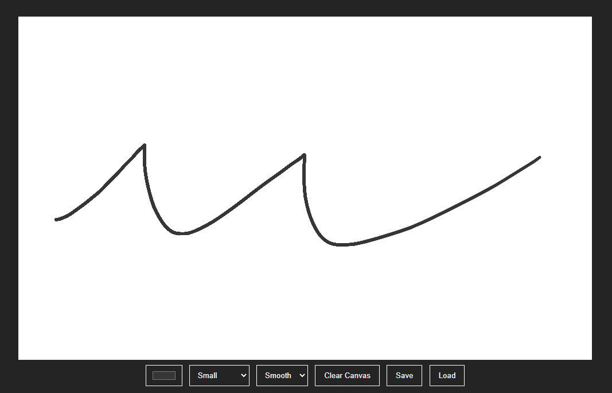
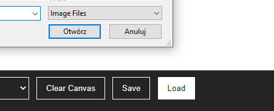
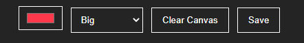

Last Major Update
23-11-2020
This update brings a couple of small fixes and puts finishing touches to the app.
This update brings a couple of small fixes and puts finishing touches to the app.
New background, transparent buttons and a better footer have been added.
This update also has set the ground for much needed css structure improvement.
This update brings full support for graphic tablets.
Along with that, the shortcuts were added. Here's a full list that will be available in the About page too:
Draw: Left Click
Toggle Eraser: E
Change Brush Size: 1 - 5
Color Picker: P
Save: Ctrl + S
Load: Ctr + O
Clear Canvas: Ctrl + X
Today's update brings full support for mobile devices.
An eraser button has been added to enable erasing on mobiles. The smoothing button has been simplified.
Tests for mobile support are in the alpha phase. It is a nightmare to implement but that means the project is entering its final stage.
Also, the sites overall performance was improved.
Fixed compatibility with different browsers. The application now supports Chrome/Firefox/Edge.
It also mostly works in Opera but you can experience a few glitches.
Internet Explorer/Opera/Safari are not supported because of the code's complexity. I'm forbidden from using any dependencies on this project and supporting every browser would consume too much time.
From this moment on you can choose to draw smoothly. It's a great feature for finishing touches or quick drawing. It makes the strokes look pretty.
Of course, you can also draw sharply should you choose so.
The idea of implementing a smooth drawing method is in intense development. There will also be a way back to the default sharp pencil too.
The code is still very experimental and requires a lot of work before the release but most of the things work with the new algorithm.
Today's update only featured a small visual fix on the color button.
Currently, new features are being developed. They can't be released now because they are challenging the whole drawing mechanic. Experimental support for Bezier curves and brush pattern is in the making. Mobile support isn't the priority right.
This update enabled importing images from file. The functionality is rather experimental and causes some malfunctions but mostly works.
Blog should now scroll all the way down. The responsivity was introduced in the subpages. The eraser is scaled compared to the current brush size to make using it easier.
Anyway, not using any libraries was a mistake but what can I do? That's the requirement for this project.
With this update, some of the very needed features were added. Now, you can pick the brush size and right mouse click will erase your lines. A color picker has also been added.
All of it is topped with new button style that fits the website.
Website structure developed and drawing board created. Now you can draw, clear the canvas and even save the drawing to your computer. At first, development was almost halted after developing a drawing method because of a bug that caused the brush to draw somewhere else. It took some time to fix it.